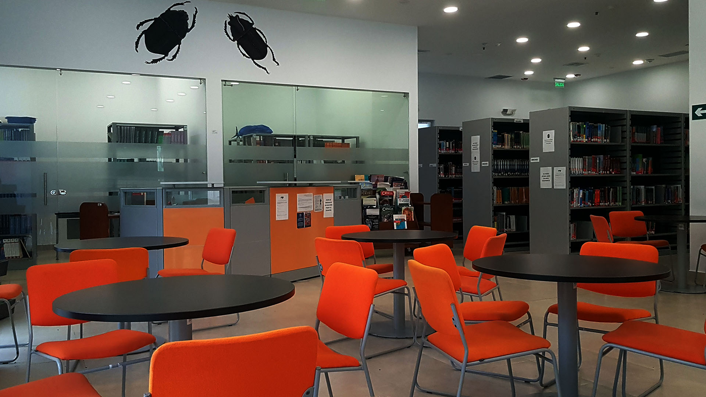
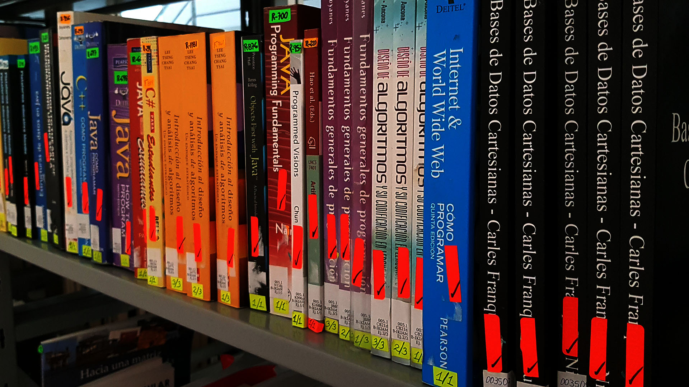
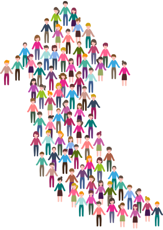

-

 Centro de Servicios BibliotecariosIkiam“Si supiese qué es lo que estoy haciendo, no lo llamaría investigación, ¿verdad?”
Centro de Servicios BibliotecariosIkiam“Si supiese qué es lo que estoy haciendo, no lo llamaría investigación, ¿verdad?”
ALBERT EINSTEIN -

Centro de Servicios BibliotecariosIkiamEn cuestiones de ciencia, la autoridad de miles no vale más que el humilde razonamiento de un único individuo
Galileo Galilei
BIENVENIDA
CENTRO DE SERVICIOS BIBLIOTECARIOS UNIVERSIDAD REGIONAL AMAZÓNICA IKIAM
La biblioteca de la Universidad Regional Amazónica IKIAM, trabaja para apoyar el desarrollo de la investigación, la docencia y el estudio, proporcionando el acceso a los recursos de información necesarios, propios de esta Universidad o ajenos a ella. Ocupa un lugar fundamental en nuestra institución, la misma que constituye un espacio de consultas, de estudio, de intercambio y mucho más, que enriquece la enseñanza y responsabilidad de los estudiantes, docentes, y otros profesionales de la institución, en el proceso de enseñanza y aprendizaje.
Además coloca a disposición de los usuarios de la Biblioteca, fuentes electrónicas para que accedan a información especializada (bibliográfica y documental) necesaria para el estudio y la investigación.
SERVICIOS
La biblioteca de la Universidad Regional Amazónica Ikiam, brinda atención a toda la comunidad universitaria. En general la biblioteca ponen a disposición de usuarios internos y externos los siguientes servicios:
Lectura en sala
Mediante este servicio cualquier unidad de información permite la consulta de sus fondos durante un periodo de tiempo limitado, que coincide con el horario de apertura, supone la potenciación de toda la zona externa de la biblioteca.
Acceso directo con estantería abierta a bibliografía actual
El usuario puede escoger libremente la información y documentación que requiere, además le proporciona al lector una mejor y mayor selectividad.
Fondo bibliográfico
Se pondrán al servicio de los usuarios internos capítulos del fondo bibliográfico utilizado de acuerdo al sílabo de cada área del conocimiento.
Sala de computación e internet
La sala de computación cuenta con varias computadoras que permiten el acceso a diversas fuentes informativas, tanto a las generadas por la propia biblioteca en su página web, como a otras externas, además todas las máquinas cuentan con servicio de internet.
Consulta bibliográfica y de referencia
Los funcionarios del Centro de Servicios bibliotecarios está siempre disponible para facilitar orientación, asesoría y apoyo en búsqueda, localización y recuperación de información dentro de la Biblioteca de la Universidad a través de su propia colección, funcionamiento y servicios. Este servicio se presta con la finalidad de conseguir que toda la información requerida sea satisfecha.
Préstamo interbibliotecario
Permite al usuario de la Universidad acceder al servicio de préstamo externo de materiales bibliográficos en otras bibliotecas de diferentes instituciones o entidades con las cuales se tengan convenio interinstitucional.
Catálogo en línea
Catálogo en línea u OPAC es un catálogo automatizado de acceso público en línea de todo el Fondo Bibliográfico existente en una biblioteca. El acceso a estos recursos los usuarios pueden realizarlo desde cualquier sitio donde tengan internet.
Formación de usuarios
Los usuarios tanto estudiantes de todos los programas que ingresan a primer semestre, son informados de generalidades de la Biblioteca y son capacitados en el uso de los servicios que ofrece la misma, así mismo los estudiantes de otros semestres, profesores e investigadores que requieran de capacitación.
Promoción de la Lectura
La Biblioteca realiza actividades de promoción de la lectura con la Comunidades, se inició en el 2015 hasta 2019 con el Proyecto Integrador de Saberes (PIS) , el mismo que consistía en la promoción de la lectura en las comunidades donde intervienen los estudiantes.
